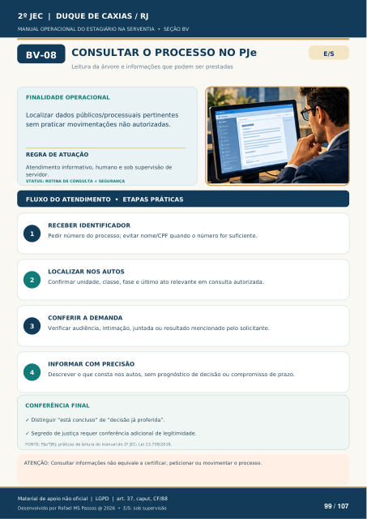

CONSULTAR O PROCESSO NO PJe
Leitura da árvore e informações que podem ser prestadas
FINALIDADE OPERACIONAL
Localizar dados públicos/processuais pertinentes sem praticar movimentações não autorizadas.
REGRA DE ATUAÇÃO
Atendimento informativo, humano e sob supervisão de servidor.
STATUS: ROTINA DE CONSULTA + SEGURANÇA
FLUXO DO ATENDIMENTO • ETAPAS PRÁTICAS
RECEBER IDENTIFICADOR
Pedir número do processo; evitar nome/CPF quando o número for suficiente.
LOCALIZAR NOS AUTOS
Confirmar unidade, classe, fase e último ato relevante em consulta autorizada.
CONFERIR A DEMANDA
Verificar audiência, intimação, juntada ou resultado mencionado pelo solicitante.
INFORMAR COM PRECISÃO
Descrever o que consta nos autos, sem prognóstico de decisão ou compromisso de prazo.
CONFERÊNCIA FINAL
Distinguir “está concluso” de “decisão já proferida”.
Segredo de justiça requer conferência adicional de legitimidade.
FONTE: PJe/TJRJ; práticas de leitura do manual do 2º JEC; Lei 13.709/2018.
ATENÇÃO: Consultar informações não equivale a certificar, peticionar ou movimentar o processo.
Ver também o infográfico original (página 99)
